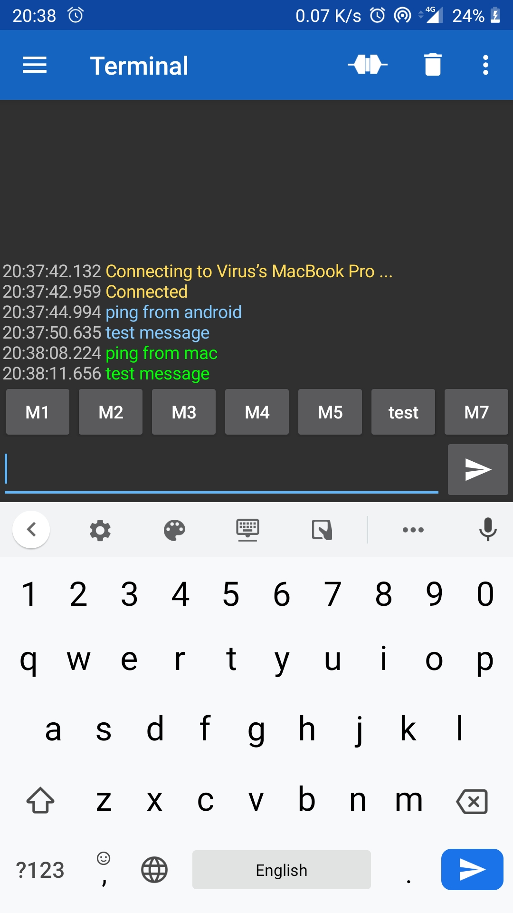

Serial Bluetooth Terminal With Python Asyncio
Introduction
PySerial package provides a tool called miniterm1, which provides a terminal to interact with any serial ports.
However miniterm sends each and every character as we type instead of sending entire message at once. In addition to this, it doesn't provide any timestamps on the messages transferred.
In this article, lets write a simple terminal to address the above issues.
Bluetooth Receiver
pyserial-asyncio2 package provides Async I/O interface for communicating with serial ports. We can write a simple function to read and print all the messages being received on a serial port as follows.
import sys
import asyncio
import datetime as dt
import serial_asyncio
async def receive(reader):
while True:
data = await reader.readuntil(b'\n')
now = str(dt.datetime.now())
print(f'{now} Rx <== {data.strip().decode()}')
async def main(port, baudrate):
reader, _ = await serial_asyncio.open_serial_connection(url=port, baudrate=baudrate)
receiver = receive(reader)
await asyncio.wait([receiver])
port = sys.argv[1]
baudrate = sys.argv[2]
loop = asyncio.get_event_loop()
loop.run_until_complete(main(port, baudrate))
loop.close()
Now we can connect a phone's bluetooth to a laptop bluetooth. From phone we can send messages to laptop using bluetooth terminal app like Serial bluetooth terminal4.
Here a screenshot of messages being send from an Android device.

We can listen to these messages on laptop via serial port by running the following command.
$ python receiver.py /dev/cu.Bluetooth-Incoming-Port 9600
2020-08-31 10:44:50.995281 Rx <== ping from android
2020-08-31 10:44:57.702866 Rx <== test message
Bluetooth Sender
Now lets write a sender to send messages typed on the terminal to the bluetooth.
To read input from terminal, we need to use aioconsole 3. It provides async input equivalent function to read input typed on the terminal.
import sys
import asyncio
import datetime as dt
import serial_asyncio
import aioconsole
async def send(writer):
stdin, stdout = await aioconsole.get_standard_streams()
async for line in stdin:
data = line.strip()
if not data:
continue
now = str(dt.datetime.now())
print(f'{now} Tx ==> {data.decode()}')
writer.write(line)
async def main(port, baudrate):
_, writer = await serial_asyncio.open_serial_connection(url=port, baudrate=baudrate)
sender = send(writer)
await asyncio.wait([sender])
port = sys.argv[1]
baudrate = sys.argv[2]
loop = asyncio.get_event_loop()
loop.run_until_complete(main(port, baudrate))
loop.close()
We can run the program with the following command and send messages to phone's bluetooth.
$ python sender.py /dev/cu.Bluetooth-Incoming-Port 9600
ping from mac
2020-08-31 10:46:52.222676 Tx ==> ping from mac
2020-08-31 10:46:58.423492 Tx ==> test message
Here a screenshot of messages received on Android device.

Conclusion
If we combine the above two programmes, we get a simple bluetooth client to interact with any bluetooth via serial interface. Here is the complete code 5 for the client.
In the next article, lets see how to interact with Bluetooth LE devices.